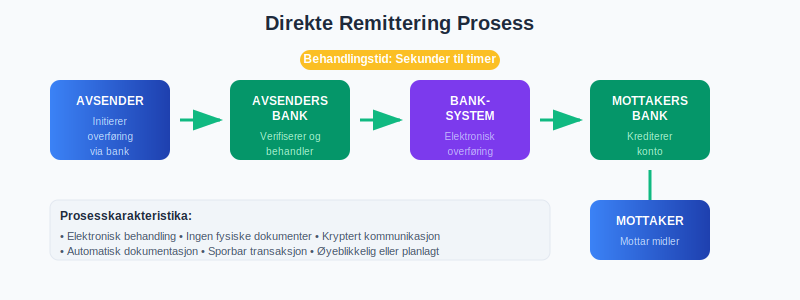
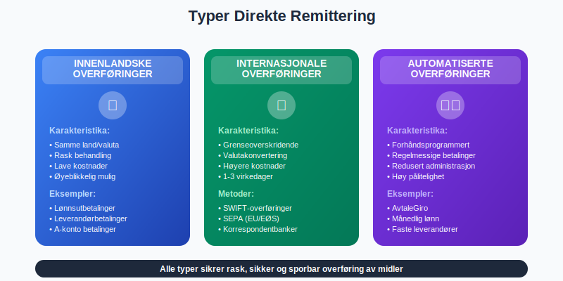
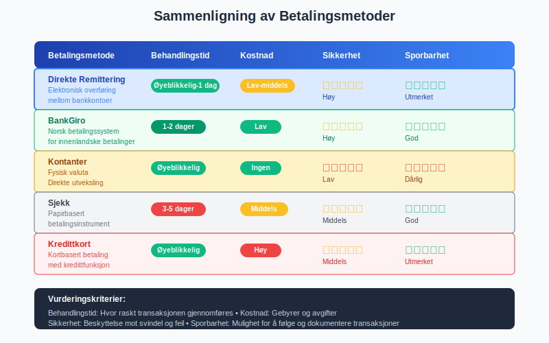
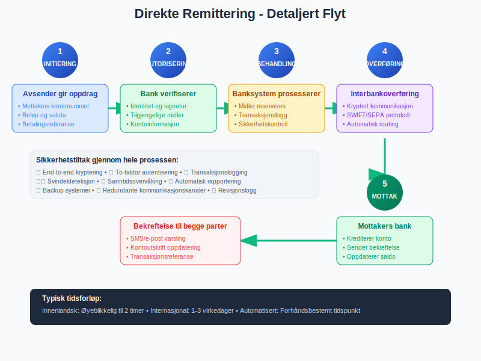
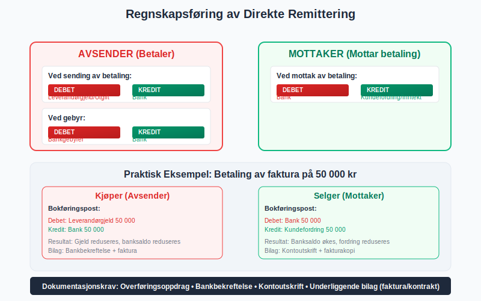
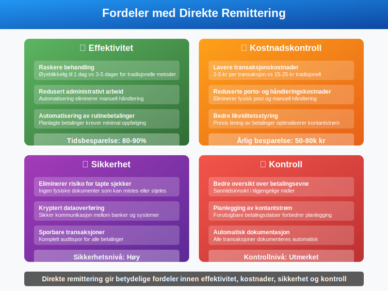
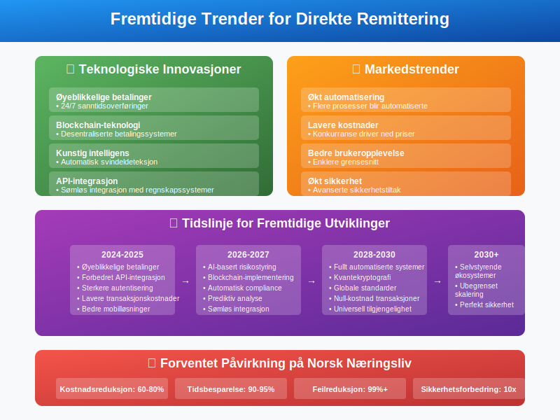
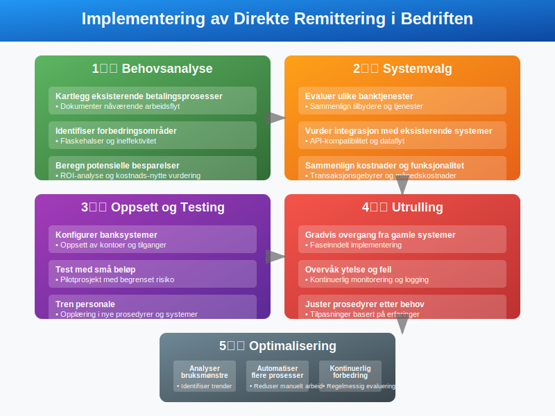
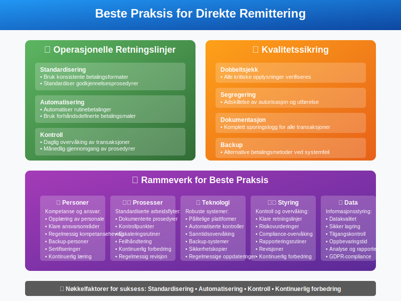

For en oversikt over remittering og dens ulike former, se Remittering.
For en oversikt over remittering og dens ulike former, se Remittering.
Direkte remittering er en betalingsmetode hvor penger overføres direkte fra en bankkonto til en annen uten mellomliggende instanser eller fysisk håndtering av kontanter. Dette er en elektronisk overføringsform som har blitt en grunnleggende del av moderne betalingsmidler og regnskapsføring i norsk næringsliv.
Hva er Direkte Remittering?
Direkte remittering, også kjent som direkte overføring eller elektronisk pengeoverføring, er en prosess hvor midler flyttes elektronisk fra en bankkonto til en annen. I motsetning til tradisjonelle betalingsmetoder som sjekker eller kontanter, skjer hele transaksjonen digitalt gjennom banksystemet.

Hovedkarakteristika:
- Elektronisk behandling: Ingen fysiske dokumenter eller kontanter involvert
- Direkte overføring: Midler går direkte mellom kontoer
- Umiddelbar eller planlagt: Kan utføres øyeblikkelig eller på forhåndsbestemt dato
- Sporbar: Alle transaksjoner dokumenteres elektronisk
- Sikker: Kryptert kommunikasjon mellom banker
Typer Direkte Remittering
Det finnes flere former for direkte remittering, hver med sine spesifikke anvendelsesområder og karakteristika.

1. Innenlandske Overføringer
Beskrivelse: Overføringer mellom kontoer i samme land.
Eksempler:
- Lønnsutbetalinger til ansatte
- A-konto betalinger til leverandører
- Betaling av fakturaer
2. Internasjonale Overføringer
Beskrivelse: Grenseoverskridende overføringer mellom ulike land.
Metoder:
- SWIFT-overføringer
- SEPA-overføringer (innen EU/EØS)
- Korrespondentbank-nettverk
3. Automatiserte Overføringer
Beskrivelse: Forhåndsprogrammerte, regelmessige overføringer.
Eksempler:
- AvtaleGiro for regelmessige regninger
- Månedlige lønnsutbetalinger
- Automatiske leverandørbetalinger
Sammenligning med Andre Betalingsmetoder
For å forstå direkte remittering bedre, er det nyttig å sammenligne med andre betalingsformer.

| Betalingsmetode | Behandlingstid | Kostnad | Sikkerhet | Sporbarhet |
|---|---|---|---|---|
| Direkte Remittering | Øyeblikkelig - 1 dag | Lav-middels | Høy | Utmerket |
| BankGiro | 1-2 dager | Lav | Høy | God |
| Kontanter | Øyeblikkelig | Ingen | Lav | Dårlig |
| Sjekk | 3-5 dager | Middels | Middels | God |
| Kredittkort | Øyeblikkelig | Høy | Middels | Utmerket |
Prosessen for Direkte Remittering
Direkte remittering følger en strukturert prosess som sikrer trygg og effektiv overføring av midler.

Trinn-for-trinn Prosess:
-
Initiering
- Avsender gir oppdrag til sin bank
- Nødvendig informasjon samles inn
-
Autorisering
- Banken verifiserer avsenders identitet
- Kontroll av tilgjengelige midler
-
Behandling
- Transaksjonen behandles av banksystemet
- Midler reserveres på avsenders konto
-
Overføring
- Midler sendes til mottakers bank
- Kommunikasjon mellom banker
-
Mottak
- Mottakers bank krediterer kontoen
- Bekreftelse sendes til begge parter
Regnskapsføring av Direkte Remittering
Korrekt regnskapsføring av direkte remitteringer er avgjørende for nøyaktig bankavstemming og finansiell rapportering.

For Avsender:
Ved sending av betaling:
Debet: Leverandørgjeld / Utgift XXX
Kredit: Bank XXX
Ved gebyr:
Debet: Bankgebyrer XXX
Kredit: Bank XXX
For Mottaker:
Ved mottak av betaling:
Debet: Bank XXX
Kredit: Kundefordring / Inntekt XXX
Dokumentasjon som Kreves:
- Overføringsoppdrag: Original instruks til bank
- Bankbekreftelse: Bevis på gjennomført transaksjon
- Kontoutskrift: Viser endring i banksaldo
- Fakturaer/kontrakter: Underliggende forretningsgrunn
Fordeler med Direkte Remittering
Direkte remittering tilbyr betydelige fordeler for både bedrifter og privatpersoner.

For Bedrifter:
-
Effektivitet
- Raskere behandling enn tradisjonelle metoder
- Redusert administrativt arbeid
- Automatisering av rutinebetalinger
-
Kostnadskontroll
- Lavere transaksjonskostnader
- Reduserte porto- og håndteringskostnader
- Bedre likviditetsstyring
-
Sikkerhet
- Eliminerer risiko for tapte sjekker
- Kryptert dataoverføring
- Sporbare transaksjoner
-
Kontroll
- Bedre oversikt over betalingsevne
- Planlegging av kontantstrøm
- Automatisk dokumentasjon
For Leverandører:
- Raskere betaling: Redusert tid fra faktura til betaling
- Forutsigbarhet: Kjente betalingsdatoer
- Redusert risiko: Mindre sjanse for tapte betalinger
Praktiske Eksempler
La oss se på hvordan direkte remittering brukes i praksis gjennom konkrete eksempler.

Eksempel 1: Månedlig Lønnsutbetaling
Situasjon: Et selskap med 50 ansatte skal utbetale lønn.
Tradisjonell metode vs. Direkte remittering:
| Aspekt | Tradisjonell | Direkte Remittering |
|---|---|---|
| Tid brukt | 4-6 timer | 30 minutter |
| Kostnad per utbetaling | 15-25 kr | 2-5 kr |
| Risiko for feil | Høy | Lav |
| Dokumentasjon | Manuell | Automatisk |
Årlig besparelse: Ca. 50 000 - 80 000 kr
Eksempel 2: Leverandørbetaling
Situasjon: Betaling av 20 fakturaer til ulike leverandører.
Prosess:
- Fakturaer attesteres og godkjennes
- Betalingsinformasjon registreres i banksystem
- Samlet betalingsoppdrag sendes til bank
- Bank utfører alle overføringer samtidig
- Automatisk oppdatering av leverandørreskontro
Resultat:
- Alle betalinger gjennomført på én dag
- Automatisk avstemming mot bilag
- Redusert administrativt arbeid
Eksempel 3: Internasjonal Handel
Situasjon: Import av varer fra Tyskland verdt €50 000.
Direkte remittering prosess:
- Kontrakt spesifiserer betalingsbetingelser
- Importør initierer SEPA-overføring
- Midler overføres innen 1 virkedag
- Eksportør bekrefter mottak
- Varer sendes umiddelbart
Fordeler:
- Rask betaling sikrer rask levering
- Lave overføringskostnader innen EU
- Transparent valutakurs
Risikostyring og Sikkerhet
Selv om direkte remittering er sikker, er det viktig å implementere riktige sikkerhetstiltak.

Sikkerhetstiltak:
-
Autorisasjonsnivåer
- Ulike godkjennelsesnivåer basert på beløp
- Dobbel signatur for store beløp
- Tidsbegrensede autorisasjoner
-
Teknisk Sikkerhet
- To-faktor autentisering
- Krypterte kommunikasjonskanaler
- Regelmessige sikkerhetsoppdateringer
-
Prosedyrer
- Daglig avstemming av banktransaksjoner
- Månedlig gjennomgang av alle overføringer
- Årlig revisjon av betalingsprosedyrer
Vanlige Risikoer og Forebygging:
| Risiko | Sannsynlighet | Konsekvens | Forebygging |
|---|---|---|---|
| Feil mottaker | Middels | Høy | Dobbeltsjekk av kontonummer |
| Feil beløp | Lav | Middels | Automatisk validering |
| Svindel | Lav | Høy | Sterke autorisasjonsprosedyrer |
| Systemfeil | Lav | Middels | Backup-systemer |
Regulatoriske Krav
Direkte remittering er underlagt strenge regulatoriske krav for å sikre trygg og effektiv betaling.

Norske Reguleringer:
- Finanstilsynet: Overvåker betalingssystemer
- Betalingstjenestedirektivet (PSD2): EU-regulering implementert i Norge
- Hvitvaskingsloven: Krav til kundeidentifikasjon
- Personvernforordningen (GDPR): Beskyttelse av persondata
Compliance-krav:
- KYC (Know Your Customer): Identifikasjon av kunder
- AML (Anti-Money Laundering): Overvåking av mistenkelige transaksjoner
- Rapportering: Obligatorisk rapportering til myndigheter
- Dokumentasjon: Oppbevaring av transaksjonsdata
Fremtidige Utviklingstrender
Direkte remittering utvikler seg raskt med ny teknologi og endrede forbrukerbehov.

Teknologiske Innovasjoner:
- Øyeblikkelige betalinger: 24/7 sanntidsoverføringer
- Blockchain-teknologi: Desentraliserte betalingssystemer
- Kunstig intelligens: Automatisk svindeldeteksjon
- API-integrasjon: Sømløs integrasjon med regnskapssystemer
Markedstrender:
- Økt automatisering: Flere prosesser blir automatiserte
- Lavere kostnader: Konkurranse driver ned priser
- Bedre brukeropplevelse: Enklere grensesnitt
- Økt sikkerhet: Avanserte sikkerhetstiltak
Implementering i Bedriften
For å implementere direkte remittering effektivt, bør bedrifter følge en strukturert tilnærming.

Implementeringstrinn:
-
Behovsanalyse
- Kartlegg eksisterende betalingsprosesser
- Identifiser forbedringsområder
- Beregn potensielle besparelser
-
Systemvalg
- Evaluer ulike banktjenester
- Vurder integrasjon med eksisterende systemer
- Sammenlign kostnader og funksjonalitet
-
Oppsett og Testing
- Konfigurer banksystemer
- Test med små beløp
- Tren personale
-
Utrulling
- Gradvis overgang fra gamle systemer
- Overvåk ytelse og feil
- Juster prosedyrer etter behov
-
Optimalisering
- Analyser bruksmønstre
- Automatiser flere prosesser
- Kontinuerlig forbedring
Beste Praksis
For å maksimere fordelene med direkte remittering, bør bedrifter følge etablerte beste praksis.

Operasjonelle Retningslinjer:
-
Standardisering
- Bruk konsistente betalingsformater
- Standardiser godkjennelsesprosedyrer
- Implementer felles rapporteringsrutiner
-
Automatisering
- Automatiser rutinebetalinger
- Bruk forhåndsdefinerte betalingsmaler
- Implementer automatisk avstemming
-
Kontroll
- Daglig overvåking av transaksjoner
- Månedlig gjennomgang av prosedyrer
- Årlig evaluering av leverandører
Kvalitetssikring:
- Dobbeltsjekk: Alle kritiske opplysninger verifiseres
- Segregering: Adskillelse av autorisasjon og utførelse
- Dokumentasjon: Komplett sporingslogg for alle transaksjoner
- Backup: Alternative betalingsmetoder ved systemfeil
Konklusjon
Direkte remittering har revolusjonert måten bedrifter håndterer betalinger på. Som en effektiv, sikker og kostnadseffektiv betalingsmetode, tilbyr den betydelige fordeler sammenlignet med tradisjonelle alternativer.
Nøkkelfordeler:
- Effektivitet: Raskere behandling og redusert administrativt arbeid
- Kostnadskontroll: Lavere transaksjonskostnader og bedre likviditetsstyring
- Sikkerhet: Kryptert overføring og sporbare transaksjoner
- Fleksibilitet: Støtter både innenlandske og internasjonale overføringer
Fremtidsperspektiv:
Med kontinuerlig teknologisk utvikling vil direkte remittering bli enda mer integrert i bedrifters daglige drift. Øyeblikkelige betalinger, forbedret sikkerhet og lavere kostnader vil gjøre denne betalingsmetoden til en enda mer attraktiv løsning.
For bedrifter som ønsker å modernisere sine betalingsprosesser, representerer direkte remittering en investering i både nåværende effektivitet og fremtidig konkurranseevne. Ved å implementere riktige prosedyrer og sikkerhetstiltak, kan organisasjoner dra full nytte av denne teknologiens potensial.
Kombinert med andre moderne betalingsmidler og integrert med avanserte regnskapssystemer, vil direkte remittering fortsette å være en hjørnestein i moderne finansiell forvaltning.